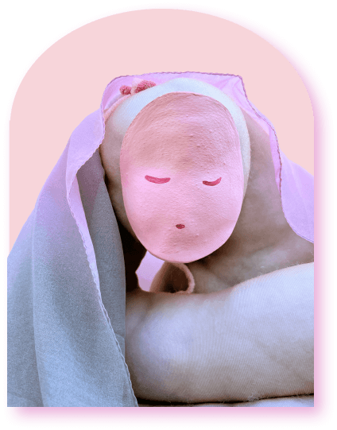

Slumber
дрімота
scroll down to learn more
scroll down to learn more
Slumber is a sculpture representing the sweet and precious feeling of falling into a sleep. The sculpture is soft, vulnerable, and fragile, just like any living being asleep. Its rounded form and softness invite the viewers into a warm hug and an unforgettable nap.
The sculpture intends to evoke the feeling of relaxation and replenishing of energy of body and mind during a night of sleep. Good sleep is something that we should prioritize, cherish and be excited about!

Drag all of the materials into this area to learn more about Slumber and how it was created!